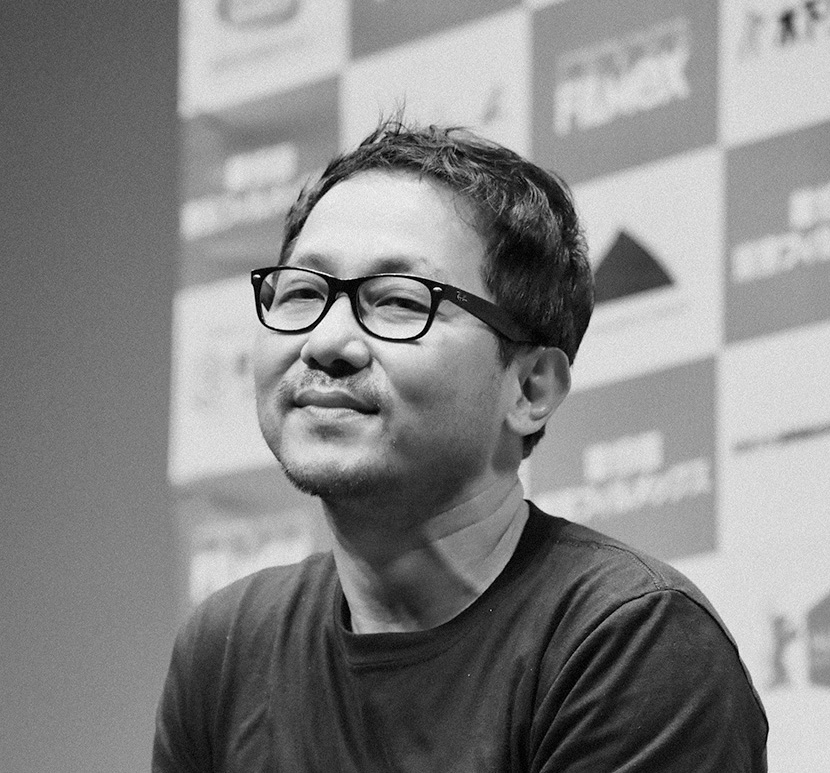

SPOTLIGHTS
สยมภู มุกดีพร้อม มีผลงานอันโดนเด่นและเป็นที่รู้จักในฐานะผู้กำกับภาพจากการถ่ายภาพยนตร์ให้กับอภิชาติพงศ์ วีระเศรษฐกุล สยมภู มุกดีพร้อมได้รับการยอมรับจากนานาประเทศ จากการกำกับภาพให้กับภาพยนตร์เรื่อง Arabian Nights กำกับโดย Miguel Gomes รวมถึงภาพยนตร์สองเรื่องล่าสุดของ Luca Guadagnino ผู้กำกับชาวอิตาลี เรื่อง Suspiria และ Call Me By Your Name ซึ่งสยมภู มุกดีพร้อมได้รับรางวัลผู้กำกับภาพยอดเยี่ยม (Best Cinematography Awards) ในงานรับรางวัล the Independent Spirit Awards ทั้งในปี 2017 และปี 2018 การเสวนาในครั้งนี้เราจะพูดคุยกันถึงเส้นทางวิชาชีพและประสบการณ์การทำงานของคุณสยมภู มุกดีพร้อมจากผู้กำกับสัญชาติไทยสู่การทำงานในบทบาทผู้กำกับภาพนานาชาติ โดยกิจกรรมจะดำเนินการเป็นภาษาไทยและแปลเป็นภาษาอังกฤษโดย ก้อง ฤทธิ์ดี
วันพฤหัสบดีที่ 4 กรกฏาคม เวลา 19:00 - 21:00 น.
Auditorium
ดำเนินรายการเป็นภาษาไทยพร้อมการแปลภาษาอังกฤษ
พุทธิพงษ์ อรุณเพ็งได้รับรางวัล Orizzonti Prize จากภาพยนตร์เรื่องกระเบนราหู (Manta Ray) จากเทศกาลภาพยนตร์นานาชาติเวนิสครั้งที่ 75 ที่อิตาลีในปีพ.ศ. 2561 ซึ่งถือว่าเป็นครั้งแรกในประวัติศาสตร์ภาพยนตร์ไทยที่ได้รับรางวัลอันทรงเกียรตินี้ กระเบนราหูยังคงเดินทางและได้รับเสียงตอบรับอันดีจากทั่วโลกอย่างต่อเนื่อง การเสวนาในครั้งนี้เราจะชวนพุทธิพงษ์เล่าถึงประสบการณ์การใช้เวลา 8 ปีในการสร้างภาพยนตร์กระเบนราหูตั้งแต่กระบวนการคิด การหาทีมงานและความร่วมมือ การก้าวข้ามอุปสรรคต่างๆ ร่วมถึงจุดเริ่มต้นการทำภาพยนตร์สั้นเรื่อง ชิงช้าสวรรค์ (Ferris Wheel) ที่พัฒนาไปสู่การสร้างภาพยนตร์ขนาดยาวในเวลาต่อมาโดยกิจกรรมจะดำเนินการเป็นภาษาไทยและแปลเป็นภาษาอังกฤษโดย ก้อง ฤทธิ์ดี
วันเสาร์ที่ 6 กรกฏาคม เวลา 19:00 - 21:00 น
Auditorium
ดำเนินรายการเป็นภาษาไทยพร้อมการแปลภาษาอังกฤษ

— เกิดเมื่อปีพ.ศ. 2513 สยมภูเริ่มมีผลงานอันโดนเด่นและเป็นที่รู้จักในฐานะผู้กำกับภาพจากการถ่ายภาพยนตร์หลายๆ เรื่องให้กับอภิชาติพงศ์ วีระเศรษฐกุล ล่าสุดเขาได้รับการยอมรับในระดับนานาชาติด้วยการมีโอกาสได้ถ่ายภาพยนตร์เรื่อง Arabian Nights ของผู้กำกับ Miguel Gomes รวมถึงภาพยนตร์อันโด่งดังสองที่ได้รับรางวัลการันตีมากมาย ได้แก่ Call Me By Your Name และ Suspiria ของผู้กำกับ Luca Guadagnino
— sจบการศึกษาจากคณะจิตรกรรม มหาวิทยาลัยศิลปากร ภาพยนตร์สั้นของเขาได้ฉายในหลายเทศกาลนานาชาติ อาทิ ปูซาน ร็อตเตอร์ดัม ฮัมบวร์ค และสิงค์โปร์ โดยเฉพาะ Ferris Wheel ภาพยนตร์สั้นเรื่องล่าสุดของเขาที่ได้รับการชื่นชมและเดินทางไปฉายกว่า 20 เทศกาล ได้รับรางวัลถึง 10 รางวัลด้วยกัน นอกจากนี้พุทธิพงษ์ยังรู้จักกันดีในฐานะผู้กำกับภาพให้กับภาพยนตร์อิสระหลายๆ เรื่อง อาทิ Vanishing Point กำกับโดย จักรวาล นิลธำรงค์, The Island Funeral กำกับโดย พิมพกา โตวิระ, Dolphins กำกับโดย Waleed Al-Shehh และเมื่อปีพ.ศ. 2561 พุฒิพงษ์ได้กลับมากำกับอีกครั้งกับภาพยนตร์ขนาดยาวเรื่องแรกของเขาที่กำลังเป็นที่พูดถึงทั่วโลกในชื่อ Manta Ray หรือกระเบนราหู